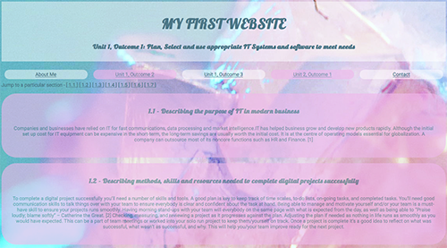

Jump to a particular section -
[ 1.1 ]
[ 1.5 ]
[ 1.6 ]
[ 1.7 ]
1.1 - Describing the content and layout for each page
On the home page I have my header; created using a class called “header” which dictated the font size, background colour, padding and that the text would be aligned in the centre. Here is where you are first introduced to my flexbox navigation bar in alternating colours. I used another flexbox to have my images and ‘about me’ text side by side.

Each unit and outcome page are displayed in exactly the same layout. I reused the header class for the page title. Each answer is in its own purple bubble div. Any references I have used to write my content are below with links opening up a new window for the article to be read without diverting from my website. I also included a button at the bottom of the page to bring you back to the top

I personally struggle with reading large chunks of text displayed on a screen all at once so I created a sub-navigation bar leading to individual web pages with each answer displayed. After each answer, I put a mini navigation bar so the user could go back an answer, back to the main outcome page or move onto the next answer.

My contact page has links to my Linked in, email, and GitHub account. Along with the same navigation bar I have used throughout my website. I reused my about me images in a row flexbox as the page was looking a bit bare.

1.5 - Describing copyright and other constraints affecting websites
Copyright is one of the main types of intellectual property. It allows the copyright owner to protect against others copying or reproducing their work. [8]
Including images on your website is an easy way to make your website more appealing and engaging. Obtain royalty-free images from reputable sources. It is also a good idea to do a background search on the image before using it, just to make sure. One sure-fire way to protect yourself against copyright laws is to take your own images/create your own artwork. [9]
You must always properly cite any copyrighted material you have used. The information should be clear enough, so the reader can be easily directed to the original source. (I have been doing this throughout this assignment!)
1.6 - Describing access issues that need taking into account
Web accessibility lets people with cognitive difficulties, vision impairment, or those who are deaf or hard of hearing gain access to online content such as webpages, electronic documents, and multimedia. [10]
People with visual impairments can make use of a screen reader in order to hear what is written on a website. These software applications provide a computer-synthesized speech output of what appears on the screen. [11]
From personal experience (I am dyslexic) and can find it hard to read huge blocks of text. Using text reading software can help, but in public settings, it can be inconvenient. Simply breaking up text, adding images or charts can make a website easier to take in and digest.
For deaf or hard of hearing people, the most obvious solution is subtitles and captions. Making sure these features are synced up correctly.
For persons with motor impairments (such as limited or no use of fingers or
hands), the barriers are created by cluttered layout, buttons, and links that
are too small. These can make sites and their functions unusable for the person if they were to use standard equipment.[11] Alternative keyboards or joysticks are used by people with a range of impairments. [10]
1.7 - Describe which are the appropriate filetypes for websites
JPG – Is one of the most common image format used. JPG’s are highly compatible with a small file size with quality loss. The downside of using JPG’s is that they don’t support transparent backgrounds and it’s difficult to layer them with other elements. [12] JPG is best used for full colour photos.
PNG – Another common and versatile image format used. It boasts a “lossless” compression, meaning you won’t lose and picture quality when saving. PNG is the best format for screenshots and most computers will automatically use PNG. This format is best used for graphical elements. [12]
GIF – Its unique feature is its ability to be animated. Popular used to clip iconic moments form popular culture to invoke a “MOOD”. GIF’s weakness is that the quality of the pictures can be lost. So, its best use on websites are icons and graphics with few colours. [12]
TIF – Is known as the highest quality image format. Its best used for commercial print work and not for the web. Keeping a TIF copy of your original photographs is a good idea, as it offers lossless compression. However, it should be exported to a JPG or PNG for use on a website. [12]
[ TOP OF PAGE ]
Refrances
[8] Cla.co.uk - What is Copyright?
[9] Onward.justia.com - Three Ways to Avoid Copyright Infringement for Images on Your Blog
[10] Boia.org - The Most Common Web Accessibility Issues to Avoid
[11] Issues.org - Reducing Barriers to Online Access for People with Disabilities
[12] Fatrabbitcreative.com - What Image Format Should I Use on My Website?
Deigned, Written and Developed by Ashley Edge [June 2020]